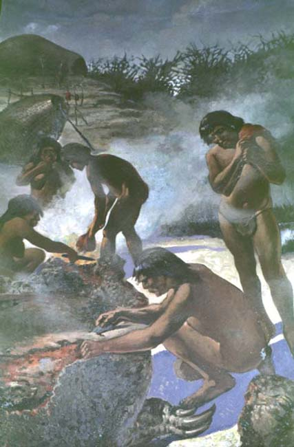

|
|  |
| Luis de Servi, Descuartizando un gliptodonte
|
The frescoes painted on the walls of the entrance hall of Argentina's
Museo de La Plata, are characteristic of this latter perception of
nomadic Amerindians as a human remnant from a bygone age. Little or
nothing had changed, according to these images, in the life of
Patagonia's original inhabitants since the time of the great
prehistoric mammals, now extinct. In fact, therefore, the state
conquest of Patagonia and Araucania, taking place whilst the museum was
being constructed and its collections assembled, was suggested to be
but a belated fulfillment of evolution's own mandate. The "prehistoric
people" of Patagonia were already museum pieces, human curiosities from
another age that had overstayed their welcome in historical time.

|